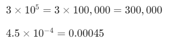
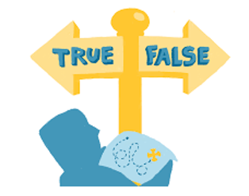
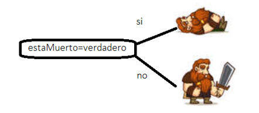
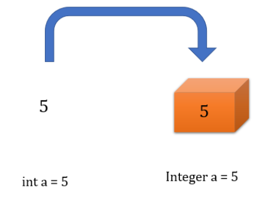
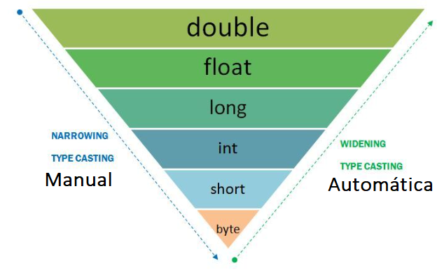

💾 Tipos de datos¶
Introducción¶
Un ordenador está compuesto fundamentalmente por circuitos electrónicos digitales.Los datos circulan por estos circuitos en forma de impulsos eléctricos.
De forma muy simplificada podemos decir que por un circuito pasa o no pasa corrientey esto lo podemos representar con dos dígitos: 0 y 1.
Todos los datos e información que contiene un ordenador, están representados de forma interna mediante secuencias de ceros y unos. Un sistema de representación que utiliza solamente dos símbolos ( 0 , 1 ) se llama sistema binario. Por tanto, los datos tal y como los expresamos de forma natural se deben codificar de forma interna en binario para que puedan ser tratados por el ordenador.
El sistema binario utiliza solamente dos dígitos ( 0 y 1 ) llamados bits.
Utilizando 2 bits podemos representar 4 valores: 00, 01, 10, 11.
Utilizando 3 bits podemos representar 8 valores: 000, 001, 010, 011, 100, 101, 110, 111.
Utilizando 4 bits podemos representar 16 valores: 0000, 0001, 0010, 0011, 0100, 0101, 0110, 0111...
En general, utilizandon bits podremos representar 2n valores. Ocho bits forman un byte. El byte es la unidad básica de medida de la información. Un byte es la cantidad más pequeña de información que el ordenador puede manejar.
Con un byte se pueden representar 28= 256 caracteres.En el interior del ordenador los datos se transmiten y almacenan en grupos de bytes llamados palabras.La longitud de palabra depende de cada tipo de ordenador: 8, 16, 32, 64.

Un tipo de datos es un conjunto de valores y un conjunto de operaciones definidas en ellos.

Para que los datos formen parte del procesamiento de la información, deben encontrarse en la memoria principal o memoria RAM. Y ahí se representan de forma lógica a través de una estructura de datos, la cual define un contenedor para el dato
Se pueden clasificar en primitivos y objetos.

Primitivos¶
Los primitivos son los más básicos y fundamentales, vienen integrados en Java. Especifican el tipo de valor almacenado en una variable y el tamaño de la memoria. Hay 8 tipos primitivos de datos integrados en el lenguaje Java. Estos incluyen: int, byte, short, long, float, double, boolean y char.

Notación científica
- La notación científica es una forma compacta de expresar números grandes o pequeños.
Está escrita en la forma N×10^e donde
Nes la mantisa yeel exponente - Los números grandes tienen exponentes positivos, y los pequeños, exponentes negativos.

en Java se representan de la siguiente forma
double numeroGrande = 1.23e5; // 1.23 x 10^5 = 123000.0
double numeroPequeno = 4.56e-4; // 4.56 x 10^-4 = 0.000456
byte¶
Como su propio nombre denota, emplea un solo byte (8 bits) de almacenamiento. Esto permite almacenar valores en el rango [-128, 127]. Raramente se usa. Ocupa menos memoria y puede ser más rápido accedido.
byte b = 2;
short¶
Usa el doble de almacenamiento que el anterior, es decir, ocupa 16 bits [-32.768, 32.767].
short s = 3467;
int¶
Emplea 4 bytes (32 bits) de almacenamiento y es el tipo de dato entero más empleado. Necesita cuatro veces el espacio que ocupa un byte. Es el entero predeterminado usado en Java.
int maxValor = 2147483647;
// after java 7 and higher
int maxValue = 2_147_483_647;
long¶
Es el tipo entero de mayor tamaño, 8 bytes (64 bits). Para definir un long, tenemos que hacerlo de la siguiente forma:
long myLongNumber = 500L;
float¶
Tiene una parte flotante que sirve para expresar números decimales. Es de simple precisión (formato y cantidad de espacio que ocupa) porque ocupa 32 bits. No se recomienda mucho su uso.
float f = 4;
float f = 4f; //también válida
double¶
Es un número de precisión doble y ocupa 64 bits. Es el flotante predeterminado en Java. Se recomienda su uso. Muchas librerías internas de Java, relacionadas con operaciones matemáticas, usan double.
double d = 5;
double d = 5d; //también válida
//en notación científica
double numeroGrande = 1.23e5; // 1.23 x 10^5 = 123000.0
double numeroPequeno = 4.56e-4; // 4.56 x 10^-4 = 0.000456
char¶
Se utiliza para almacenar caracteres (letras, números, signos, etc.) individuales. Ocupa 2 bytes en memoria (16 bits). Permite almacenar caracteres Unicode. Unicode es un estándar de codificación internacional que nos permite representar diferentes idiomas; y la forma en que funciona es usando una combinación de los dos bytes que un char ocupa en la memoria, que puede representar hasta 65535 diferentes tipos de caracteres. Unicode table.
char c = 'P';
char u = '\u00A2';//print unicode character
System.out.println(u);
char sonrie='\u263A';//emoticono sonriente ☺
System.out.println("Emoji: " + sonrie);
//combinación Unicode
String emojiModerno = "\uD83D\uDE0A"; // 😊
System.out.println("Emoji moderno: " + emojiModerno);
el par de sustitutos (surrogate pair) Unicode
Java utiliza la codificación UTF-16, por lo que algunos caracteres como los emojis modernos necesitan dos caracteres Unicode (surrogate pairs) para representarse.
\uD83D\uDE0A es el par de sustitutos (surrogate pair) que representan el código Unicode U+1F60A (😊)
Secuencia de escape¶
Un carácter precedido por una barra invertida () es una secuencia de escape y tiene un significado especial para el compilador. La siguiente tabla muestra las secuencias de escape de Java:

Nos permiten representar tabulaciones, saltos de línea, el propio caracter \ o "
/*imprime:
Java
Es un lenguaje "Increíble"
Tengo que trabajar duro para aprenderlo
*/
String miTexto="Java\nEs un lenguaje \"Increíble\"\nTengo que trabajar duro para aprenderlo";
System.out.println(miTexto);
Las versiones actuales de Java, nos permiten definir texto sin necesidad de los caracteres scape utilizando """
/*imprime:
Java
Es un lenguaje "Increíble"
Tengo que trabajar duro para aprenderlo
*/
String miTexto= """
Java
Es un lenguaje "Increíble"
Tengo que trabajar duro para aprenderlo
""";
System.out.println(miTexto);
boolean¶
En Java, el tipo de dato boolean es un tipo primitivo que puede almacenar uno de dos valores: true o false. Este tipo de dato es utilizado principalmente en decisiones de control de flujo

boolean esVerdadero = true;
boolean esFalso = false;
System.out.println("Valor de esVerdadero: " + esVerdadero);
System.out.println("Valor de esFalso: " + esFalso);
/*imprime:
Valor de esVerdadero: true
Valor de esFalso: false
*/
Un ejemplo puede ser un videojuego en el que tenemos que mostrar el enemigo cuando muere de una forma o si está vivo de otra. Podemos tener una variable booleana asociada al enemigo llamada estaMuerto y en cada fotograma ir comparando la variable para saber la imagen a mostrar

Wrapper classes (clases contenedores o envolventes)¶
Las clases contenedoras proporcionan una forma de utilizar tipos de datos primitivos como objetos.

En Java, tenemos una Wrapper class para cada uno de los 8 tipos de datos primitivos.
| Primitive data type | Wrapper class |
|---|---|
| byte | Byte |
| short | Short |
| int | Integer |
| long | Long |
| float | Float |
| double | Double |
| boolean | Boolean |
| char | Character |
Las clases contenedoras tienen gran número de métodos que nos ayudarán en nuestros programas:
//minimo valor de un entero
int minimoValorInt = Integer.MIN_VALUE;
//transforma el string al tipo correspondiente
int edad=Integer.parseInt("12");
float nota=Float.parseFloat("5.5");
Consulta la Api de Java
Busca la clase Integer y comienza a habituarte a la documentación técnica viendo sus métodos y propiedades
https://docs.oracle.com/javase/8/docs/api/java/lang/Integer.html
Conversión de tipos¶
La conversión de tipos en Java se refiere al proceso de cambiar el tipo de datos de una variable o expresión a otro tipo compatible. Esto es útil cuando necesitas realizar operaciones con variables de diferentes tipos o cuando deseas asignar el valor de una variable a otra de un tipo diferente.

Java ofrece dos tipos principales de conversión de tipos:
Conversión implícita (Casting implícito)¶
- Ocurre automáticamente cuando no hay pérdida de datos y no se requiere intervención del programador.
- Sucede cuando estás convirtiendo un tipo de dato "más pequeño" en un tipo "más grande"
Por ejemplo, convertir un int a double:
int entero = 42;
double decimal = entero; // Conversión implícita
Conversión explícita (Casting explícito)¶
- El casting explícito es necesario cuando intentas convertir un tipo más grande a un tipo más pequeño, o cuando estás trabajando con tipos que no son directamente compatibles. En estos casos, debes decirle explícitamente a Java que realice la conversión. El casting explícito puede resultar en pérdida de datos si no se tiene cuidado.
- Puedes realizar una conversión explícita colocando el tipo de destino entre paréntesis antes de la variable o expresión que deseas convertir.
double decimal = 9.75;
int entero = (int) decimal; // Conversión explícita
También es crucial asegurarse de que las conversiones sean seguras y no generen excepciones en tiempo de ejecución.
¿Qué sucede internamente?¶
Truncado decimal: Cuando se convierte un número decimal a un entero, Java simplemente elimina la parte decimal sin redondear. Solo queda la parte entera del número.
float valorDecimal = 9.35f;
int valorEntero = (int) valorDecimal; //trunca la parte decimal
System.out.println(valorEntero);//imprime 9
Desbordamiento de bits: Si el valor de un tipo más grande no cabe en el tipo más pequeño, Java utiliza solo los bits que puede manejar el tipo más pequeño, y el resto se descarta, lo que puede cambiar completamente el valor final. Esto sucede porque los tipos numéricos en Java están representados en binario y se utilizan los bits que encajan en el tamaño del nuevo tipo.
Esto puede llevar a errores inesperados
int valorEntero = 130; // En binario(32bits): 0000 0000 0000 0000 0000 0000 1000 0010
byte valorByte = (byte) valorEntero; // Solo caben 8 bits en un byte
System.out.println(valorByte); // Imprime -126
La representación en binario de 130 es 1000 0010. Un byte solo puede almacenar 8 bits, por lo que Java toma los últimos 8 bits, que corresponden a 1000 0010, lo cual equivale a -126 en la representación de complemento a dos.
Complemento a 2
El complemento a 2 es un sistema de representación de números enteros en binario que permite manejar tanto números positivos como negativos de manera eficiente en los sistemas digitales
¿Cómo funciona el complemento a 2?
En el sistema de complemento a 2:
Números positivos: Se representan de la misma manera que en binario normal. Números negativos: Se obtienen tomando el complemento a 2 del número positivo correspondiente. Esto implica invertir todos los bits (complemento a 1) y luego sumarle 1 al resultado.
Ejemplo para -126
- Escribe el número positivo equivalente (126) en binario usando 8 bits.
0111 1110
- Invierte los bits (complemento a 1).
1000 0001
- Suma 1 al resultado para obtener el complemento a 2.
1000 0001 + 1 = 1000 0010
Overflow y Underflow¶
Overflow¶
En Java, un overflow en un tipo de dato ocurre cuando un valor excede el rango máximo o mínimo que puede almacenar una variable de ese tipo. En el caso de un int en Java, que utiliza 32 bits, su rango es de:
Valor mínimo: = -2,147,483,648
Valor máximo:= 2,147,483,647
Cuando se produce un overflow, el valor "rebota" y se convierte en el valor mínimo o máximo del tipo de dato, dependiendo de si el valor supera el rango superior o inferior.
int valorMaximo = Integer.MAX_VALUE; // 2,147,483,647
System.out.println("Valor máximo: " + valorMaximo);
// Provocamos el overflow
int overflow = valorMaximo + 1;
System.out.println("Valor después del overflow: " + overflow);
//imprime "Valor después del overflow: -2147483648"
Pero los resultados pueden ser inesperados aparentemente aleatorio. Si multiplicamos dos números muy grandes y guardamos en un int
int valor = 1_000_000;
System.out.println("Valor original: " + valor);
// Multiplicamos por un valor grande para provocar overflow
int resultado = valor * valor;
System.out.println("Resultado después del overflow: " + resultado);
//imprime "Resultado después del overflow: -727379968"
Underflow¶
El underflow en Java ocurre cuando un valor es más bajo que el valor mínimo que un tipo de dato puede representar. Al igual que el overflow, el underflow causa que el valor "rebote", pero en este caso desde el valor mínimo hacia el valor máximo del rango permitido.
int valorMinimo = Integer.MIN_VALUE; // -2,147,483,648
System.out.println("Valor mínimo: " + valorMinimo);
// Provocamos el underflow
int underflow = valorMinimo - 1;
System.out.println("Valor después del underflow: " + underflow);
//imprime "Valor después del underflow: 2147483647"